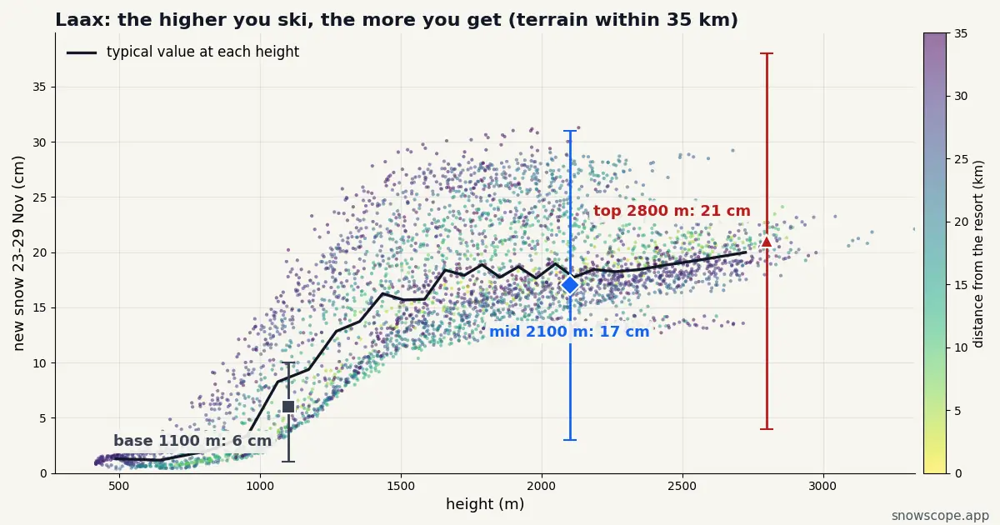

Laax next week: steady snow, about 21 cm up high (forecast 23–29 November 2026)
The question for anyone heading to Laax next week is simple: how much, and where? Between Monday 23 and Sunday 29 November our forecast puts 21 cm on the upper slopes (4–38 cm), 17 cm around 2100 m and 6 cm at the base, with Thursday 26 November as the snowiest day.
See the live snow forecast for Laax in the SnowScope appSnow depth, powder alerts and the 3D map, free.
The numbers for 23–29 November
At the top (around 2800 m) the week totals 21 cm, 4–38 cm across our range. Mid-mountain around 2100 m gets 17 cm (3–31 cm), and the base around 1100 m 6 cm (1–10 cm).
Most of the total arrives on Monday 23 (3 cm, up to 5), Wednesday 25 (4 cm, up to 6), Thursday 26 (6 cm, up to 13) and Sunday 29 (5 cm, up to 10), counted at the top as the middle of our forecast and the high case.

This week in Laax: the set-up
This week already brings 28 cm to the top of Laax (17–20 November, range 21–35 cm) and 0 cm to the base, so next week tops up an existing layer rather than bare ground.
Village level: white or wet?
The base around 1100 m gets 6 cm against 21 cm at the top. That gap says the snow line sits above the village for much of the week: rain or wet snow down low, real snow only higher up.
Laax is known for its parks, but on a fresh day the Vorab glacier is where the snow sits deepest.
Where the good snow will be
Thursday 26 November brings the most, 6 cm at the top and 13 cm at best: enough to soften the pistes, not enough for a powder day.
Go high: depth is safest on the Vorab glacier, and the best skiing should be on the Vorab glacier and the open ground around Crap Sogn Gion. Treat Flims and Falera, the sunny lower villages as the weak point.
Next door, the same week
For comparison, the upper slopes of the closest big resorts collect Davos (46 km away) 16 cm, Andermatt (48 km away) 21 cm and St. Moritz (59 km away) 19 cm; Laax sits at 21 cm.
Snow will not decide between these resorts next week. Height, aspect and which lifts are open will.
How sure is this?
Not very. The high case gives 38 cm up top, the low case just 4 cm, so whether Laax gets a real fall depends on a storm track that is still undecided.
We will refresh these numbers every day; the resort page carries the latest version.
Tips for skiers
- Off the groomed runs, new snow means new avalanche risk: the Swiss avalanche bulletin is the reference.
- Check the resort's own opening date and lift status: snow on the mountain does not mean lifts are running.
- Ride up for the snow: the base gets 6 cm, the top 21 cm.
More maps (external sites)
About these numbers
Snow numbers: our two-week snow forecast issued on 16 November 2026, read at three heights of the resort (top, mid-mountain, base). Each total is the middle of a range, with a low and a high case. These are estimates for the slopes, not resort measurements, and forecasts move from day to day: check the live map before you go.
Cite this report
For research, teaching or the press: the numbers and charts are free to reuse under CC BY 4.0 with this citation.
SnowScope (2026), Laax next week: steady snow, about 21 cm up high (forecast 23–29 November 2026), https://snowscope.app/blog/en/2026/11/laax-snow-forecast-next-week-23-29-november-2026.html, accessed 2026-11-16
SnowScope (Atlas Labs). (2026, November 16). Laax next week: steady snow, about 21 cm up high (forecast 23–29 November 2026). SnowScope snow reports. https://snowscope.app/blog/en/2026/11/laax-snow-forecast-next-week-23-29-november-2026.html
BibTeX
@misc{snowscope2026laaxsnowforecastnextweek,
author = {{SnowScope (Atlas Labs)}},
title = {Laax next week: steady snow, about 21 cm up high (forecast 23–29 November 2026)},
year = {2026},
month = nov,
howpublished = {\url{https://snowscope.app/blog/en/2026/11/laax-snow-forecast-next-week-23-29-november-2026.html}},
note = {Published 2026-11-16 11:34 UTC; accessed 2026-11-16}
}· CC BY 4.0 · Methods, data and tools →
Laax: snow and temperature by height, this winter vs last (tools) →
Follow Laax
Free: a message when fresh snow is coming, and the forecast every morning.
More snow reports
Les 2 Alpes reaches 3511 m for high snow in December 2026, with an adult 6-day pass priced at 266.50 EUR.

Grimentz-Zinal offers 71 km of runs and reliable high-altitude snow for your December trip, with 6-day passes at CHF 339.00.

We rank French ski resorts by December snow odds and checked pass prices, starting from 36.00 EUR for an adult day pass in Les Karellis.